Aide de BrunoGUI GenII
BrunoGUI est une interface d'échecs : vous jouez contre un moteur (Stockfish par défaut, de 1320 à plus de 3000 Elo) ou contre un ami, et vous analysez vos parties comme avec ChessBase.
1. Démarrage rapide
- Menu Stockfish > Nouvelle partie contre Stockfish… (Ctrl+N) : choisissez votre couleur, la force du moteur et la pendule, puis OK.
- Jouez en cliquant sur une pièce, puis sur sa case d'arrivée. Les cases possibles sont marquées.
- Le moteur répond tout seul. Ses coups s'inscrivent sur la feuille de partie, à droite de l'échiquier.
- À la fin, cliquez sur Analyse rapide sous la feuille : le moteur juge chaque coup et donne votre précision.
- Menu Fichier > Enregistrer la partie (Ctrl+S) pour garder la partie au format PGN.
2. La fenêtre principale
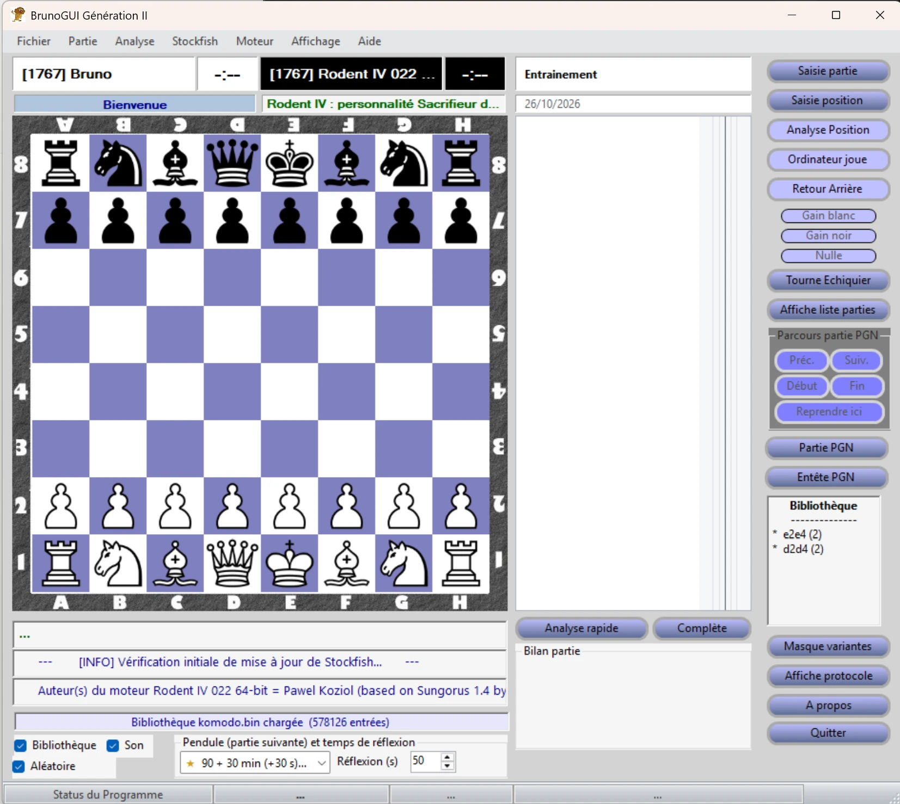
- En haut : les joueurs (« [Elo] Nom ») et leurs pendules.
- Au centre : l'échiquier. Les cases de départ et d'arrivée du dernier coup du moteur sont colorées.
- À droite de l'échiquier : le tournoi, la feuille de partie avec sa courbe d'évaluation, puis le cadre « Bilan partie » et les boutons d'analyse.
- Tout à droite : les boutons de jeu (Retour arrière, résultat, Tourne échiquier, Ordinateur joue…) et les coups connus de la bibliothèque d'ouvertures.
- Sous l'échiquier : trois lignes pour les variantes du moteur ou l'analyse du coup regardé, le choix de la pendule et du temps de réflexion, puis la barre d'état.
- Les menus : Fichier (ouvrir, enregistrer, en-tête PGN, liste des parties), Partie (parties contre le moteur en cours ou entre humains, saisie d'une position, retour arrière, résultat), Analyse (analyse de la position ou de la partie), Stockfish (nouvelle partie contre Stockfish, le choisir comme adversaire, ses réglages avancés et sa mise à jour), Moteur (les autres moteurs, réglages du moteur, bibliothèque d'ouvertures), Affichage (échiquier, couleurs, variantes, langue) et Aide. Les commandes des boutons y sont aussi.
- Raccourcis clavier : Ctrl+N nouvelle partie contre Stockfish, Ctrl+O ouvrir une partie PGN, Ctrl+I ouvrir une position FEN, Ctrl+S enregistrer la partie, Ctrl+F enregistrer la position, Ctrl+Z retour arrière, F5 analyser la position, F1 aide ; flèches, Début et Fin pour parcourir la partie.
3. Jouer une partie
Contre Stockfish
Menu Stockfish > Nouvelle partie contre Stockfish… (Ctrl+N). Cette commande reprend toujours Stockfish comme adversaire, même si un autre moteur était choisi. Rien ne change tant que vous n'avez pas cliqué sur OK : Annuler laisse la partie en cours intacte.
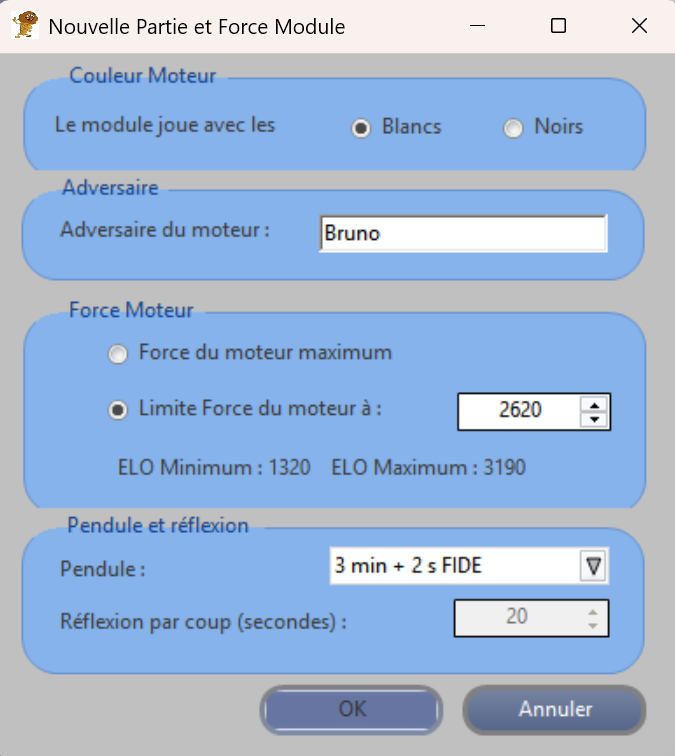
Contre un autre moteur, ou entre humains
- Menu Partie : Jouer les Blancs contre … ou Jouer les Noirs contre … (avec le nom du moteur en cours), ou Entre humains (ou saisie d'une partie) : le moteur ne joue pas, pour une partie entre amis ou pour saisir une partie (aussi par le bouton Saisie partie).
- Le moteur utilisé est celui choisi dans le menu Moteur (ou Stockfish > Jouer contre Stockfish), à la force réglée dans Moteur > Paramètres du moteur… (voir chapitre 11).
Pendant la partie
- Retour arrière annule le dernier demi-coup. Si c'est alors au moteur de jouer, l'échiquier attend : cliquez encore sur Retour arrière pour revenir à votre coup, ou sur Ordinateur joue.
- Ordinateur joue fait jouer le moteur dans la position actuelle : il prend le camp au trait, vous l'autre.
- Promotion : quand un pion arrive au bout, choisissez la pièce dans le cadre qui s'affiche.
- Tourne échiquier montre l'échiquier du côté des Noirs, ou des Blancs.
- Fin de partie : le mat, le pat, la triple répétition, la règle des 50 coups et le matériel insuffisant sont reconnus automatiquement. Les boutons Gain blanc, Gain noir et Nulle déclarent un abandon ou une nulle par accord.
- Une partie terminée peut reprendre : un Retour arrière annule le dernier coup et efface le résultat.
4. La pendule
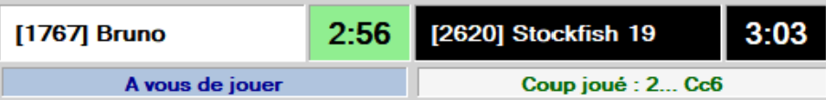
- La cadence se choisit dans la liste sous l'échiquier, ou dans la fenêtre de nouvelle partie. Elle vaut pour la partie suivante.
- Les cadences officielles de la FIDE (3 min + 2 s, 15 min + 10 s, 90 + 30 min) sont marquées d'une étoile dorée. « KO » signifie sans bonus par coup.
- La pendule démarre au premier coup. Un clic sur une pendule met la partie en pause, un autre clic la reprend.
- Le camp qui n'a plus de temps perd, sauf si l'adversaire ne peut plus mater (partie nulle). Le moteur aussi peut perdre au temps.
- Sans pendule, le moteur réfléchit le nombre de secondes indiqué dans « Réflexion (s) ».
- Le temps restant après chaque coup est enregistré dans le fichier PGN.
5. La feuille de partie
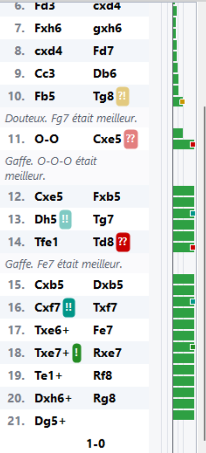
- Un clic sur un coup affiche la position après ce coup, sans changer la partie (le moteur peut continuer à jouer). Le bouton Fin (ou la touche Fin, ou un clic sur le dernier coup) ramène à la partie ; pendant le parcours, l'échiquier ne réagit pas aux clics.
- Les boutons Début, Préc., Suiv., Fin et le clavier permettent de parcourir la partie :
| Touche | Effet |
|---|---|
| ← / → | Demi-coup précédent / suivant |
| Début ou Page préc. | Position de départ |
| Fin ou Page suiv. | Retour à la partie |
| Échap | Désactive ces touches (pour taper du texte ailleurs) |
- Reprendre ici reprend la partie à la position affichée : les coups suivants sont effacés. Une partie chargée d'un fichier PGN devient ainsi une partie d'entraînement contre le moteur.
- Une flèche montre sur l'échiquier le coup regardé ; sur un coup annoté, une flèche verte montre le meilleur coup. Le coup annoté est aussi écrit, sous l'échiquier, dans la couleur de son annotation (orange pour « ? », par exemple).
6. Les annotations
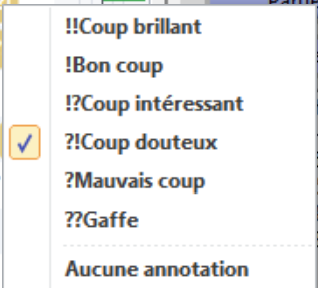
- Clic droit sur un coup pour lui donner une annotation : !! (brillant), ! (bon), !? (intéressant), ?! (douteux), ? (mauvais), ?? (gaffe).
- L'annotation s'affiche sur une pastille de couleur et elle est enregistrée dans le fichier PGN.
- Les annotations proposées par l'analyse de partie sont plus pâles. Les vôtres ne sont jamais remplacées. Une nouvelle analyse efface d'abord toute l'analyse précédente (évaluations, meilleurs coups, annotations proposées, commentaires de l'analyse), y compris celle d'un fichier PGN chargé ; vos annotations et vos commentaires restent.
7. Analyser une position
Le bouton Analyse Position fait réfléchir le moteur sur la position affichée (celle de la partie, ou celle que vous regardez dans la feuille) pendant le temps de « Réflexion (s) ». Une petite fenêtre de suivi montre pendant ce temps la position analysée, le score et la meilleure suite au fil de la réflexion, et le temps restant ; son bouton Arrêter donne tout de suite le résultat trouvé jusque-là.
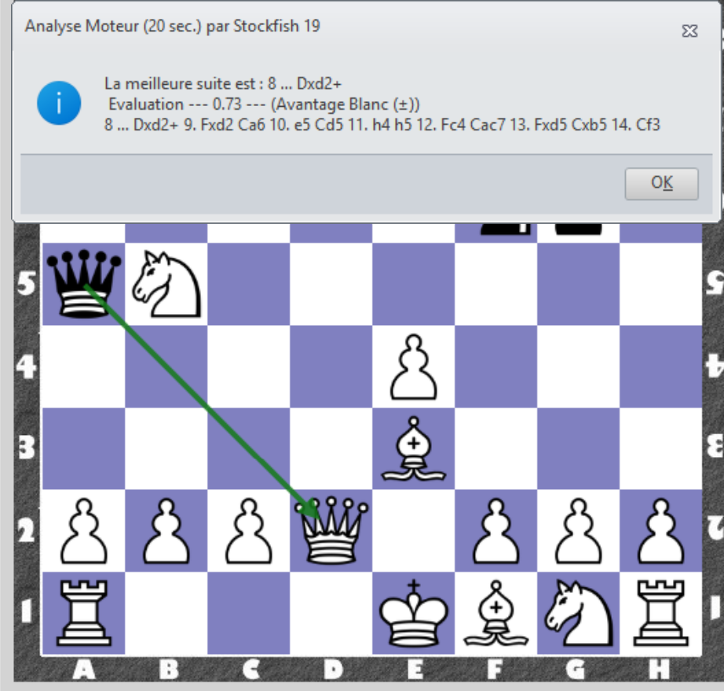
- Les évaluations sont toujours du point de vue des Blancs : +1.50 = les Blancs ont l'avantage d'un pion et demi, « M3 » = les Blancs matent en 3 coups.
- L'appréciation suit les symboles des livres d'échecs : = égal (moins de 0.30), ⩲ / ⩱ léger avantage (0.30 à 0.70), ± / ∓ avantage (0.70 à 2.00), +- / -+ gain (2.00 et plus).
- L'analyse se fait toujours à pleine force, même si le moteur est réglé plus faible pour jouer.
- Pendant l'analyse, la pendule s'arrête.
8. Analyser une partie
Sous la feuille, deux boutons lancent l'analyse de toute la partie :
- Analyse rapide : le moteur examine chaque position pendant 10 secondes (réglable), de la fin de la partie vers le début, comme ChessBase.
- Complète : en plus, les positions autour de chaque coup douteux, et de chaque « ! » ou « !! », sont revues pendant 30 secondes (réglable) pour confirmer le jugement.
- Ces deux durées se règlent par le menu Analyse > Durées de l'analyse de partie (de 1 à 600 secondes par position) ; elles sont gardées pour les fois suivantes. Ce sont des maximums : le moteur s'arrête dès qu'il atteint la profondeur 20 (24 pour la vérification de l'analyse complète, 12 pour la théorie de l'ouverture), souvent bien avant dans les positions simples.
Pendant l'analyse, une petite fenêtre montre la position examinée, le score et la meilleure suite du moteur au fil de sa réflexion, et le temps restant. Son bouton Interrompre, comme celui sous la feuille, arrête l'analyse en gardant ce qui est déjà fait ; fermer la fenêtre ne l'arrête pas. Survolez les boutons d'analyse pour connaître la durée estimée.
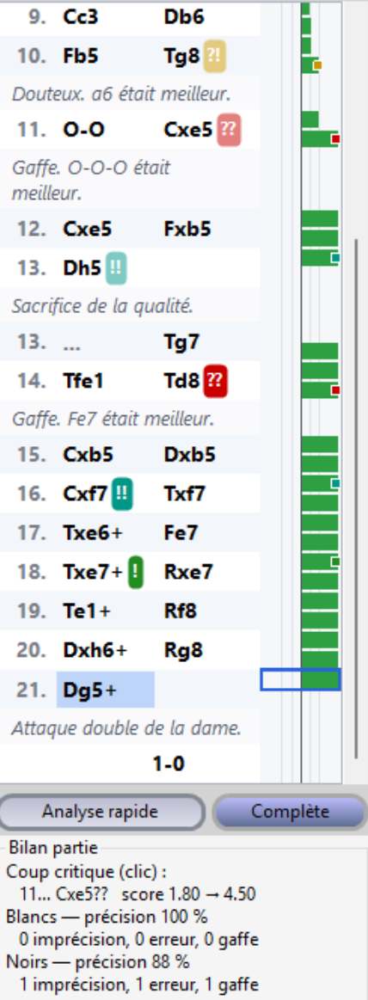
Le bilan
- Le coup critique est celui où la partie a basculé : un clic sur le bilan l'affiche.
- Pour chaque camp : la précision en % (100 % = tous les coups aussi bons que ceux du moteur) et le nombre d'imprécisions (?!), d'erreurs (?) et de gaffes (??).
- Quand la partie est déjà décidée et le reste après le coup (un camp a un gain net), un coup moins bon n'est pas annoté : il compte dans la précision, mais un « ?! » n'apprendrait rien. À l'inverse, dans une position gagnée, le sacrifice qui conclut (qui ouvre le roque adverse ou mène au mat) garde son « ! » ou son « !! ».
- Un « ! » marque un sacrifice correct (du matériel donné, ou laissé en prise même si l'adversaire refuse de le prendre), ou le seul bon coup quand il était difficile à trouver (un second Stockfish, qui repart de zéro, ne le choisit qu'en cherchant loin) ; un « !! » un sacrifice correct et difficile à trouver. Un seul bon coup naturel (une reprise, un roque…) n'a pas de « ! ». Le sacrifice est nommé à la suite du coup : « Sacrifice du cavalier », « Sacrifice de la qualité »… Quand l'évaluation change de niveau, le coup qui la fait changer est commenté : « Avantage Blanc », « Gain Noir », « Égal », « Mat en 3 pour les Blancs » ; le coup qui amène une finale la nomme : « Finale de tours », « Finale de fous de couleurs opposées »… ; un coup qui laisse passer un mat forcé est signalé : « Mat en 8 manqué » ; et l'analyse complète explique pourquoi une prise tentante n'a pas été jouée : « La tour g6 est imprenable : 22. Fxg6? fxg6 23. g4 Tc8 (-3.30) » ; ce texte est aussi écrit dans le fichier PGN enregistré.
- Thèmes tactiques, sur le meilleur coup joué : une attaque double qui gagne au moins une pièce dans la suite du moteur (la pièce jouée attaque deux cibles, et en prend une ensuite) : « Fourchette du cavalier », « Attaque double de la dame »… ; une pièce qui en démasque une autre (fou, tour ou dame) : « Échec à la découverte », « Échec double » (le roi attaqué par les deux pièces à la fois), « Attaque à la découverte » (la pièce démasquée attaque une pièce, gagnée dans la suite du moteur) ; un sacrifice qui prend un pion devant le roi roqué : « Sacrifice du cavalier : détruit le rempart du roque ».
- L'analyse complète signale aussi les menaces : ce que le joueur jouerait ensuite si l'adversaire ne faisait rien (un second Stockfish le cherche). Seule une menace concrète et sérieuse est notée, une prise, un échec ou un mat qui gagnerait au moins une pièce : « Menace : 15. Cxe7+ », « Menace de mat en 3 : 26... Cd3+ ». La réponse est commentée « Pare la menace » quand c'était le seul bon coup, et « Ne pare pas la menace » quand elle la laisse passer. Une erreur (? ou ??) n'annonce pas de menace : elle donne sa réfutation, le coup de l'adversaire qui la punit (« Réfutation : 27... Fxf3 »).
- L'ouverture est nommée au dernier coup qui y mène, avec son code ECO : « Défense sicilienne : variante Najdorf (B90) » (table des ouvertures de Lichess, libre de droits ; les noms courants sont traduits, les plus rares restent en anglais) ; elle est reconnue par la position, même atteinte par un autre ordre de coups. Le premier coup qui n'est plus dans la bibliothèque d'ouvertures chargée est marqué « Hors bibliothèque ». Le code ECO est aussi écrit dans la balise [ECO] du fichier PGN enregistré, si elle est vide. Pendant le parcours, même sans analyse, le nom de l'ouverture s'affiche à la suite du coup regardé, sur la première ligne sous l'échiquier, à partir du premier coup noir et jusqu'à la sortie de la bibliothèque.
Les commentaires dans la feuille
Après l'analyse, l'essentiel est écrit dans la feuille, sous le coup concerné, en gris : une erreur et le coup qu'il fallait jouer (« Mauvais. Cc4 était meilleur. », « Gaffe. Dc6 s'imposait. » : la tournure varie d'un coup à l'autre), un sacrifice ou un thème tactique (« Sacrifice du cavalier : détruit le rempart du roque. »), un mat manqué. Quand le moteur n'est pas d'accord avec une annotation de l'auteur du fichier (un « ? » sur un coup qu'il juge bon), la feuille l'écrit : « Le moteur juge ce coup correct. ». Après un coup blanc commenté, le coup noir reprend sur la ligne suivante. Un clic sur un commentaire affiche son coup ; le détail (évaluations, menaces, appréciation) reste sur les lignes sous l'échiquier.
La courbe d'évaluation
À droite des coups, une barre par demi-coup : verte vers la droite quand les Blancs sont mieux, rouge vers la gauche quand les Noirs sont mieux, jaune pour un mat. Un clic sur une barre affiche le coup.
Le détail d'un coup
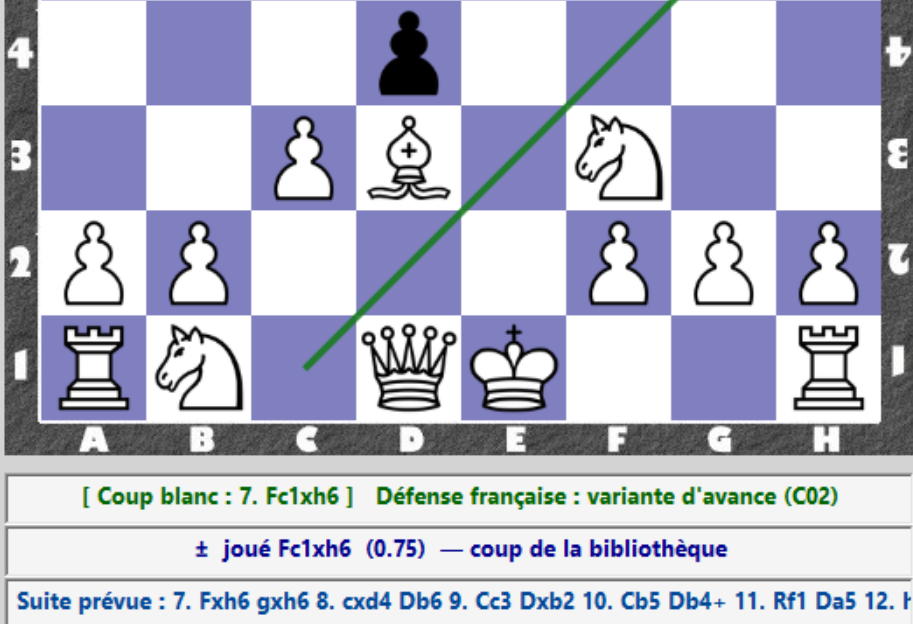
Un coup connu de la bibliothèque d'ouvertures chargée est signalé « coup de la bibliothèque » : la théorie n'est pas jugée, l'analyse ne l'annote pas et ne le compte pas dans le bilan (la suite du moteur reste sur la 3e ligne).
Un clic sur la ligne de la meilleure suite (la 3e ligne, le curseur devient une main) la rejoue sur l'échiquier, un coup par seconde avec sa flèche, puis revient au coup regardé. Un nouveau clic l'arrête.
9. Fichiers PGN et FEN
Ouvrir des parties
Menu Fichier > Ouvrir une partie PGN… (Ctrl+O) : la liste des parties du fichier s'affiche. Double-cliquez sur une partie pour la charger.
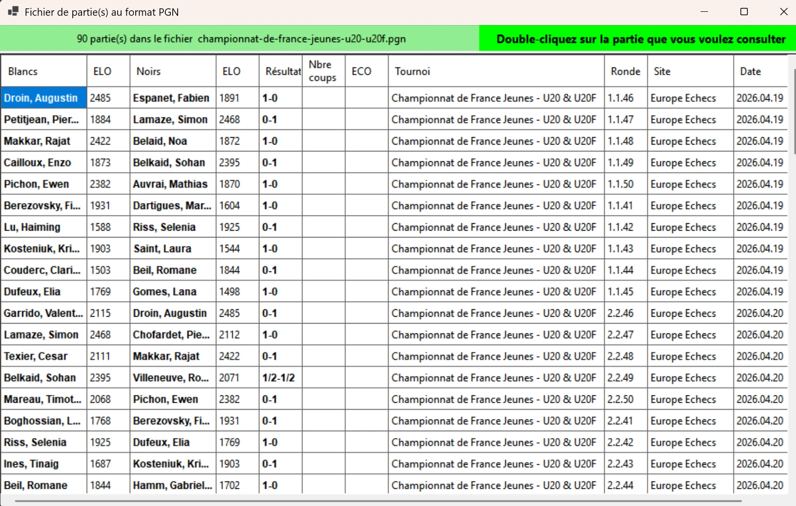
- Une partie chargée est en lecture seule : vous pouvez la parcourir et l'analyser. Ses commentaires, annotations, évaluations et temps sont repris.
- Pour la jouer à partir d'une position, utilisez Reprendre ici.
- Le bouton Affiche liste parties rouvre la liste.
- Menu Fichier > Ouvrir une position FEN… : charge une position ; vous jouez le camp au trait.
Enregistrer
- Fichier > Enregistrer la partie : la partie au format PGN. Si le fichier existe, vous pouvez l'ajouter à la fin ou remplacer le fichier.
- Fichier > Enregistrer la position : la position au format FEN.
- Le bouton Entête PGN modifie les informations de la partie (tournoi, lieu, date, joueurs, Elo, cadence).
- Le bouton Partie PGN (ou Fichier > Voir la partie en PGN…) montre la partie en PGN anglais ou français, en notation algébrique longue, en UCI ou en FEN ; « PGN commenté » la montre telle qu'elle sera enregistrée, avec les annotations, les commentaires et variantes de l'analyse, les évaluations et les temps de pendule.
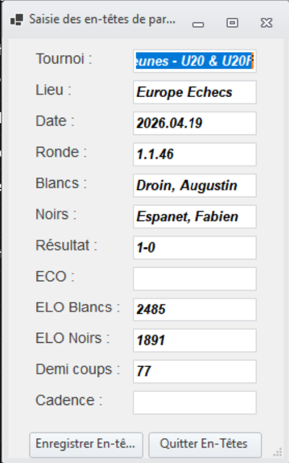
10. Saisir une position
Le bouton Saisie position ouvre un échiquier où placer les pièces à la main, en partant de la position affichée.
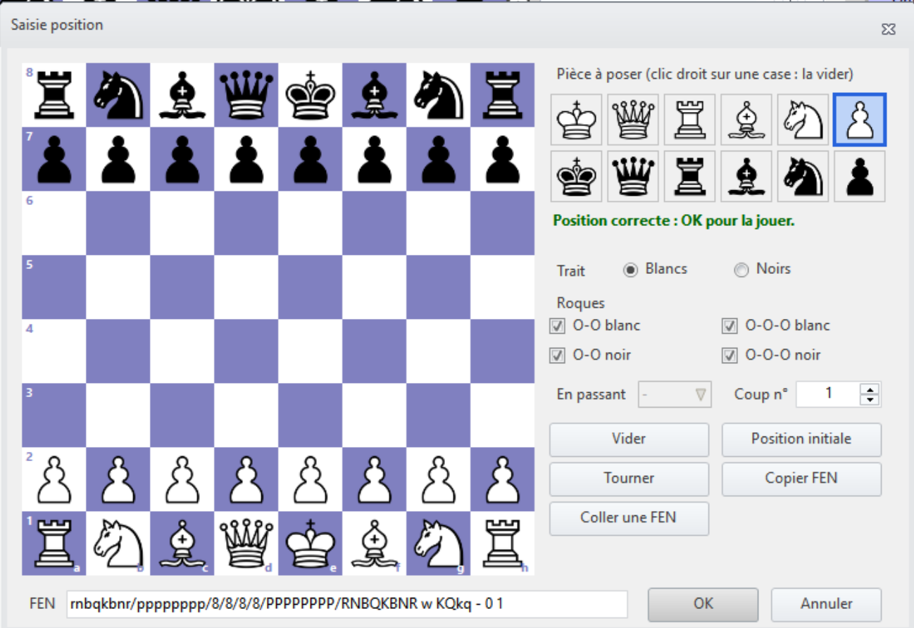
- Clic gauche : pose la pièce choisie (ou la retire si elle y est déjà). Clic droit : vide la case.
- Réglez le trait, les roques, la case en passant et le numéro du coup.
- Coller une FEN part d'une position copiée ailleurs ; Copier FEN copie la position saisie.
- OK n'est accepté que si la position est jouable : elle devient une nouvelle partie, vous jouez le camp au trait.
11. Moteurs et bibliothèques
- Menu Stockfish : tout ce qui concerne Stockfish, le moteur par défaut, l'un des plus forts du monde : nouvelle partie contre lui (Ctrl+N), Jouer contre Stockfish (le reprendre comme adversaire, coché s'il l'est), ses paramètres avancés et sa mise à jour. Menu Moteur : les autres moteurs (le moteur en cours est coché). Rodent IV (fort et polyvalent) et Sargon I (le premier moteur sur micro-ordinateur, 1978) sont fournis.
- Rodent IV ▸ : ses personnalités, en sous-menu ; en choisir une fait jouer Rodent avec ce style de jeu, imitant un champion (Morphy, Lasker, Alekhine, Tal, Petrosian, Spassky, Kortchnoï, Fischer, Karpov, Kasparov) ou un style (Dynamique, Fougueux, Défenseur, Étrangleur, Sacrifieur de pions, Positions fermées). La personnalité change le style, pas la force : la force reste l'Elo réglé. Le choix est gardé pour les parties suivantes ; « Style par défaut » rend à Rodent son style d'origine.
- Autre moteur… : tout autre moteur au protocole UCI.
- Le moteur choisi ne sert qu'à jouer contre vous. Les analyses (analyse de position, analyse rapide ou complète de la partie) sont toujours faites par Stockfish, lancé à part, avec vos réglages de variantes, de threads et de table de hachage : vous pouvez jouer contre Rodent IV ou Sargon et garder une analyse de qualité.
- Bibliothèque d'ouvertures… (en bas du menu Moteur) : un livre d'ouvertures au format Polyglot (*.bin). Des bibliothèques spécialisées sont fournies pour travailler une ouverture.
- À droite de l'échiquier, la liste des coups connus de la bibliothèque ; ⭐ marque celui que le moteur a joué. Les cases Bibliothèque et Aléatoire activent la bibliothèque et font choisir un coup au hasard, pour varier les ouvertures.
- Paramètres du moteur… : réglages du moteur en cours, dont le nom figure dans le titre de la fenêtre : force (Elo, dans la plage que ce moteur accepte, par exemple 800 à 2800 pour Rodent IV et 1320 à 3190 pour Stockfish ; grisée pour un moteur qui ne règle pas sa force par l'Elo, comme Sargon), nombre de variantes, threads, temps de réflexion. L'Elo n'est envoyé que si vous l'avez changé : un moteur en pleine force y reste. Les Elo de deux moteurs ne se comparent pas : « 1800 » ne donne pas la même force chez Rodent et chez Stockfish.
- Paramètres avancés de Stockfish… : les options propres à Stockfish (table de hachage, fichiers NNUE, tables Syzygy…), seulement quand Stockfish est le moteur en cours. Ces réglages sont facultatifs.
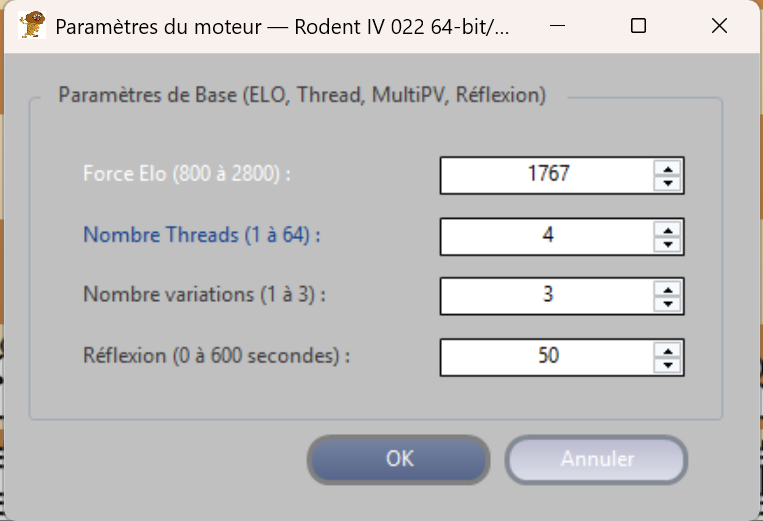
12. Options et langue
- Affichage > Tourner l'échiquier, Masquer les variantes et Protocole UCI : comme les boutons du même nom.
- Affichage > Couleurs des cases : les couleurs des cases claires et sombres.
- Affichage > Langue : français ou anglais. Le programme propose de redémarrer pour appliquer le choix.
- La case Son émet un son quand le moteur joue.
- Masque variantes cache les lignes de variantes sous l'échiquier ; Affiche protocole montre les échanges avec le moteur (pour les curieux).
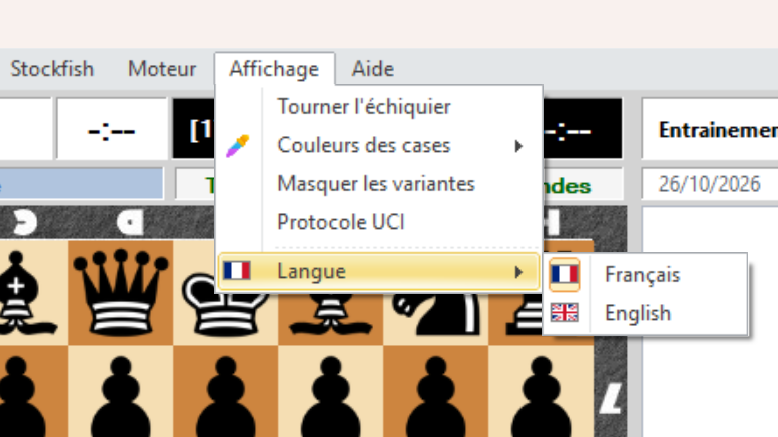
13. Mise à jour et fichiers du programme
- Installation : BrunoGUI se publie sous forme d'archive zip, sans installation. Avant de la décompresser, faites un clic droit sur le zip > Propriétés > cochez « Débloquer ». Sinon, au premier lancement, Windows affiche « Windows a protégé votre ordinateur » (SmartScreen) : cliquez sur « Informations complémentaires » si besoin, puis sur « Exécuter quand même ». Cet avertissement vient de ce que le programme, libre et gratuit, n'est pas signé numériquement ; il ne signale pas un problème du programme.
- Mise à jour de Stockfish : le programme vérifie de temps en temps s'il existe une nouvelle version et propose de l'installer. Menu Stockfish > Mise à jour de Stockfish pour vérifier tout de suite.
- Moteur qui s'arrête : si un moteur s'arrête tout seul (plantage), un message le signale et propose de le relancer ; s'il devait jouer, il rejoue son coup. Le Stockfish qui analyse est relancé d'office.
- BrunoGUI.ini, à côté du programme : les réglages par défaut (moteur, couleurs, palette…).
- BrunoGUI.preferences.ini : vos préférences, enregistrées à la fermeture (couleurs, nom, temps de réflexion, langue…). Supprimez-le pour revenir aux réglages par défaut.
- BrunoGUI.log : le journal des erreurs. Si un problème survient, ce fichier aide à le corriger.